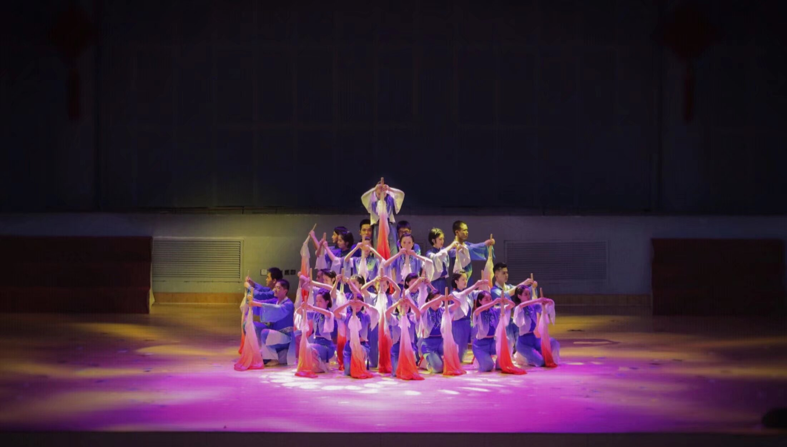

个人作品

•性格方面：ISFJ人格，可靠耐心，高标准，为人友善，乐于助人。
•协作方面：逻辑能力强，可以统筹兼顾，提前规划并合理安排任务；有强烈集体荣誉感。
福州第一中学 (2018.09 - 2021.06)
高中期间担任校舞蹈队队长，带领团队完成多次精彩演出。
立命馆亚洲太平洋大学 (2021.09 - 2025.08)
市场营销/经营战略与组织 本科 | GPA: 3.11/4.0
主修课程：生产管理、商业伦理、数据库系统、品牌管理等。
福建国通星驿网络科技有限公司 (2025.02 - 至今)
后端开发工程师实习生，掌握一定HTML和CSS基础知识概念。
肯德基有限公司 (2023.09 - 2025.02)
按照标准对实习员工进行严格指导培训，保证餐品出品质量。 检查和记录厨房人员到岗情况，卫生情况及原料准备情况，厨房卫生评级连续数月达到优秀评级。 优化工作流程和方法的建议得到采纳，显著提高了厨房整理工作效率，缓解高峰期店内人手不足的压力。 根据历史销售数据精准决策，食材损耗率得到有效降低和控制。
新方向国际教育集团 (2021.06 - 2021.08)
使用Procreate设计并制作各类活动海报、招聘海报、品牌宣传册和营销物料。 营销活动的策划与执行：参与品牌的线下推广活动并与客户进行后续的线上对接。
福州朴朴电子商务有限公司(2021.4 - 2021.6)
协助商品上架、补货、盘点及清洁，优化仓库运营流程。严格遵循收货标准，处理商品异常库存，确保库存准确性。负责仓储商品的系统化整理与管理，协调人员分工配合，提升仓库整体效率。
北京青年绘文化传播有限公司（2020.8 - 2020.12）
使用公司派发的宣传物料进行班服的线下销售和推广，记录客户联系方式提交公司进行线上对接。在一个季度内全校有三成以上的班级通过最终选择并购买了青年绘提供的定制班服。
• 熟练使用Excel, Word, PowerPoint, Visual Basic等办公软件。
• 擅长航拍设备操作，能拍摄高质量航拍视频和照片。
• 语言能力：雅思5.5，日语N2，具备一定英文阅读理解及日语听说能力。
邮箱：2694502061@qq.com
微信：p32326